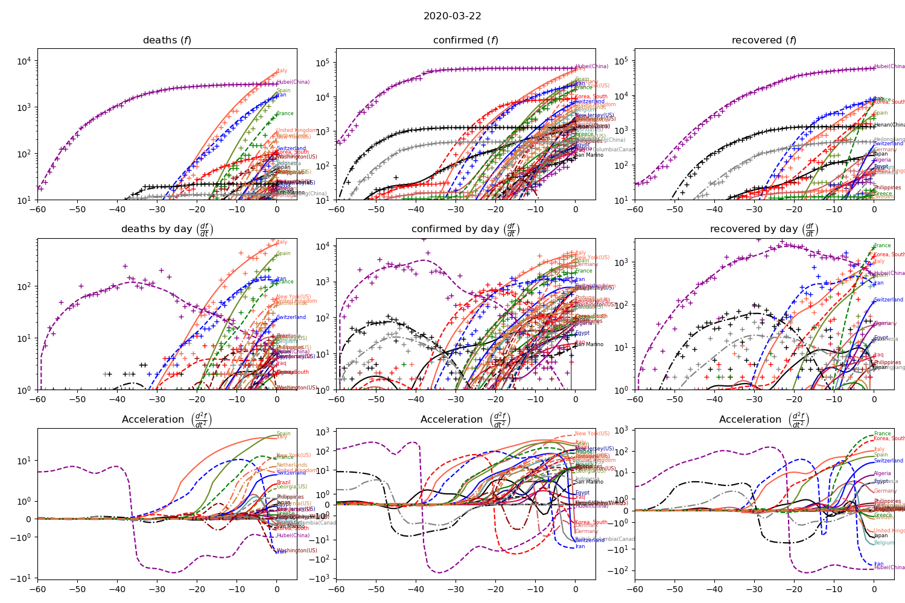
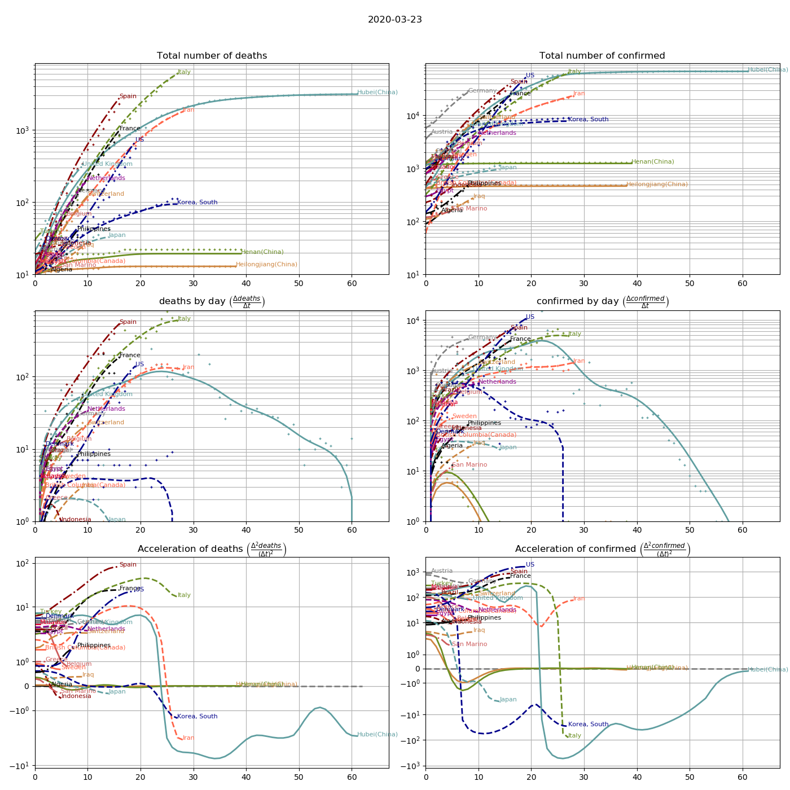

Evolution of the number of deaths and the number of confirmed cases (depends on each state policy)
Start date = 2020/1/22

Curves synchronized (start when number of deaths >=10 )

Evolution through time (animations)
Start date = 2020/1/22

Synchronization by number of deaths (>=10)